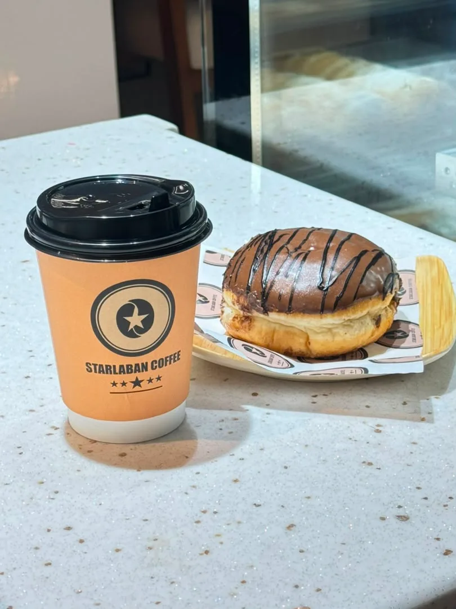
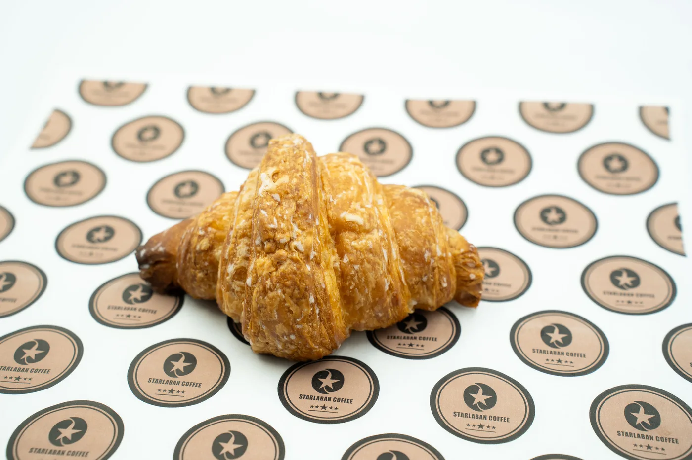

The Starlaban feeling
Good coffee.
Even better company.
A familiar cup. A freshly baked favourite. A place to catch up, slow down, or take a little goodness with you.
This is Starlaban Coffee, Mogadishu. Your everyday pause, made a little more personal.
A look inside ↗